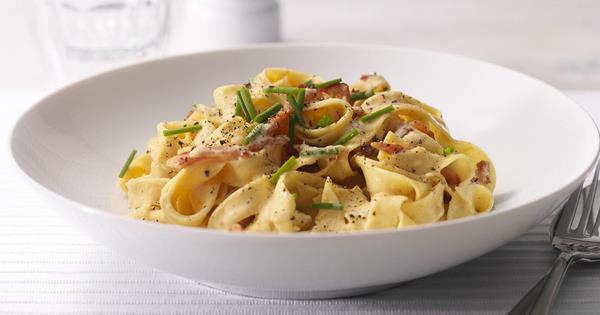

Cream Pasta
~Suraj Ingle

Ingredients
For Fresh Pasta
-Refined flour
-Eggs
-Salt
-Olive Oil
-Water ( if required)
-For sauce
-Cream
-Capsicum
-Garlic
-Bell peppers
-Oregano
-Thyme
-Basil
Recipe-
Method
1) First, make a nest with the flour on a clean work surface. Add the remaining ingredients to the center ..
2) combined the all ingredients and make a tight dough.
3) wrap the dough in plastic wrap Let the dough rest at room temperature for 30 minutes. After the dough rests, cut into equal portion.
4) Use a rolling pin or your hands to gently flatten one into an oval disk.
5) Then, run it through the widest setting of your pasta maker. roll it out to your desired thickness.
6) Finally, cut the pasta sheet into spaghetti sheet
7) bring the water to boli add little oil and salt. Then add handmade pasta in boiling water and cook for 20 minutes..
For sauce
1) Take pan add olive oil and butter, add chopped garlic saute for minutes, the bell peppers and capsicum and Cook for minutes.
2) after sauteing vegetable add fresh cream and cool the vegetables in it
3) add some thyme , oregano and chilli flakes for spiciness... Here the sauce is ready add boiled pasta and cook in sauce.... And garnished with Basil leaves.
Back to Categories (श्रेणियों में वापस)
Back to Recipes (व्यंजनों पर वापस जाएं)